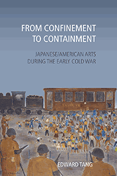

<HTML><head>
<meta name='robots' content='noindex,nofollow' /><script> (function(i,s,o,g,r,a,m){i['GoogleAnalyticsObject']=r;i[r]=i[r]||function(){  (i[r].q=i[r].q||[]).push(arguments)},i[r].l=1*new Date();a=s.createElement(o),  m=s.getElementsByTagName(o)[0];a.async=1;a.src=g;m.parentNode.insertBefore(a,m)   })(window,document,'script','//www.google-analytics.com/analytics.js','ga');   ga('create', 'UA-43183130-1', 'temple.edu');   ga('send', 'pageview'); </script><title>Edward Tang: From Confinement to Containment - Print</TITLE><link rel="stylesheet" href="../general.css" type="text/css"><SCRIPT LANGUAGE = JAVASCRIPT></SCRIPT></HEAD><BODY LINK="#3152A5" VLINK="#3152A5" ALINK=Gray BGCOLOR=White><CENTER><P CLASS=intro><br>Examining the legacies of four Japanese and Japanese/American artists and writers in the postwar era<br><br></P></CENTER><br>&nbsp;<!--none//--><Table width="100%" border=0 cellspacing=5><tr><td width="175" align="center"></td><td><h1 class = "booktitle">From Confinement to Containment</h1> <h1 class = "subtitle">Japanese/American Arts during the Early Cold War</h1><h3 class="author">Edward Tang </h3><p class="info">paper EAN: 978-1-4399-1749-7 (ISBN:1-4399-1749-3)</br>$39.95, Feb 19, <font color=#990033>Not Yet Published Preorder</font><br><p class="info">cloth EAN:  978-1-4399-1748-0 (ISBN:1-4399-1748-5)</br>$110.50, Feb 19, <font color=#990033>Not Yet Published Preorder</font><br><p class="info">Electronic Book EAN: 978-1-4399-1750-3 (ISBN:1-4399-1750-7)</br>$39.95, Feb 19, <font color=#990033>Not Yet Published Preorder</font><br><p class="info">292 pp, 6 x 9, 25 halftones</p></td></tr></table></P></td></tr></table><BR><BLOCKQUOTE></BLOCKQUOTE><P><P><p>During the early part of the Cold War, Japan emerged as a model ally, and Japanese Americans were seen as a model minority. <i>From Confinement to Containment</i> examines the work of four Japanese and Japanese/American artists and writers during this period: the novelist Hanama Tasaki, the actor Yamaguchi Yoshiko, the painter Henry Sugimoto, and the children's author Yoshiko Uchida. The backgrounds of the four figures reveal a mixing of nationalities, a borrowing of cultures, and a combination of domestic and overseas interests.<br/><br/>Edward Tang shows how the film, art, and literature made by these artists revealed to the American public the linked processes of U.S. actions at home and abroad. Their work played into-but also challenged-the postwar rehabilitated images of Japan and Japanese Americans as it focused on the history of transpacific relations such as Japanese immigration to the United States, the Asia-Pacific War, U.S. and Japanese imperialism, and the wartime confinement of Japanese Americans. <i>From Confinement to Containment </i>shows the relationships between larger global forces as well as how the artists and writers responded to them in both critical and compromised ways <i>.</i><br/><br/>In the series <i>Asian American History and Culture, </i>edited by Cathy Schlund-Vials, Rick Bonus, and Shelley Sang-Hee Lee. Founding editor, Sucheng Chan; editor emeriti, Michael Omi, David Palumbo-Liu, K. Scott Wong, and Linda Trinh V&otilde;<br><P CLASS="top"><A HREF="#top">BACK TO TOP</A></P></p><P></p><p></b></p><BR><p></p></P><BR>&nbsp;<p><P><H2  class="inpageheading"><A NAME="author bio"></a>About the Author(s)</H2><p><b>Edward Tang</b> is an Associate Professor of American Studies at the University of Alabama.<br><P CLASS="top"><A HREF="#top">BACK TO TOP</A></P></P><p><h2 class="inpageheading"><a name="subjects"></a>Subject Categories</h2> <p><a href="http://www.temple.edu/tempress/asian_amer.html" target="_top">Asian American Studies</a> <br><a href="http://www.temple.edu/tempress/american.html" target="_top">American Studies</a> <br><a href="" target="_top"></a> <br><a href="" target="_top"></a> <br><a href="" target="_top"></a> </p></p><P><h2 class="inpageheading">In the Series</h2><p><a target="_top" href="http://www.temple.edu/tempress/asam_history.html" OnMouseOver="window.status='Click for other books in this series!';return true;"OnMouseOut="window.status=" ><i>Asian American History and Culture</i></a></P><p><p>Founded by Sucheng Chan in 1991, the Asian American History and Culture series has sponsored innovative scholarship that has redefined, expanded, and advanced the field of Asian American studies while strengthening its links to related areas of scholarly inquiry and engaged critique. Like the field from which it emerged, the series remains rooted in the social sciences and humanities, encompassing multiple regions, formations, communities, and identities. Extending the vision of founding editor Sucheng Chan and emeriti editor Michael Omi, David Palumbo-Liu, K. Scott Wong and Linda Trinh Võ, series editors Cathy Schlund-Vials, Rick Bonus, and Shelley Sang-Hee Lee continue to develop a foundational collection that embodies a range of theoretical and methodological approaches to Asian American studies.</p></P></P></P><P>&nbsp;</P><font face="Arial" size="1"><a href="copyright.html" OnMouseOver="window.status='Web Copyright Policy';return true;" OnMouseOut="window.status=''" TITLE="Web Copyright Policy">&copy;</a> 2019 <a href="http://www.temple.edu" target="new" OnMouseOver="window.status='Link to Temple University home page';return true;" OnMouseOut="window.status=''" TITLE="Link to Temple University home page">Temple University</a>. All Rights Reserved. This page: <a href="http://www.temple.edu/tempress/titles/2543_reg.html"OnMouseOver="window.status='Link to the book page';return true;" OnMouseOut="window.status=''" TITLE="Link to the book page">http://www.temple.edu/tempress/titles/2543_reg.html.</a></font></BODY></HTML>                    
